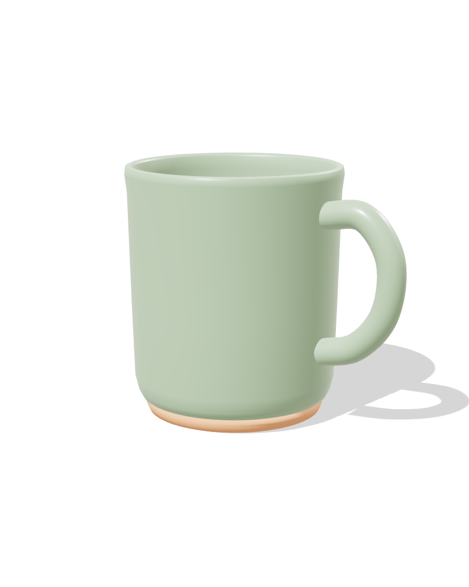
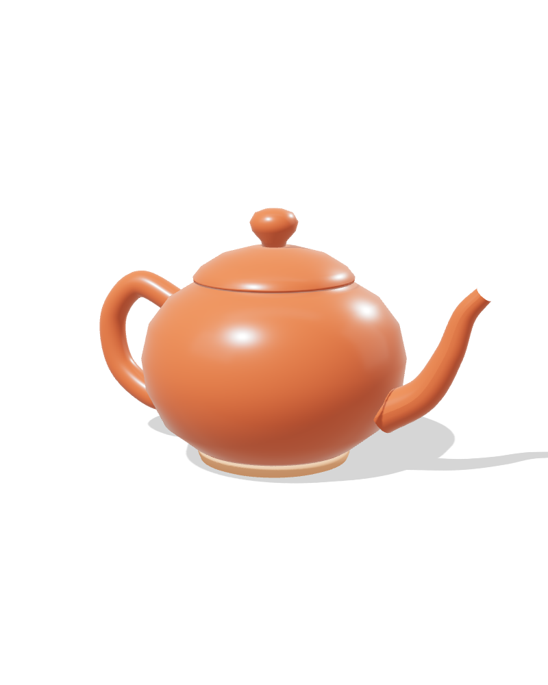

Обжиг. Керамика в 3D
Модели кружки и чайника для студии керамики. Их можно покрутить прямо в браузере, сменить глазурь и посмотреть сетку модели. Из этих же моделей сделаны кадры для карточек товаров на маркетплейсах.
Потяните, чтобы повернуть
От профиля до глазури
Обе модели построены из кривой профиля, которую вращают вокруг оси, плюс отдельные детали: ручка, носик и крышка.
Профиль
Рисую половину силуэта: толщину стенки, закругление края и ножку.
Вращение
Профиль вращается вокруг оси в 96 сегментов: получается ровное тело без швов.
Детали
Ручку и носик веду трубкой по кривой. Носик сужается к концу, как у настоящего чайника.
Материалы и свет
Глянцевая глазурь с бликами, матовая ножка из глины и мягкий студийный свет с тенью.
Кадры для каталога
Готовые изображения на прозрачном фоне. Из них собраны карточки товаров для маркетплейсов.




Нужна 3D-модель товара?
Смоделирую предмет и сделаю рендеры для сайта, каталога или карточек маркетплейса.
Обсудить проект